밀리터리 잡담 - 상륙함 이야기
게시: 2022-03-31T06:30:54+09:00
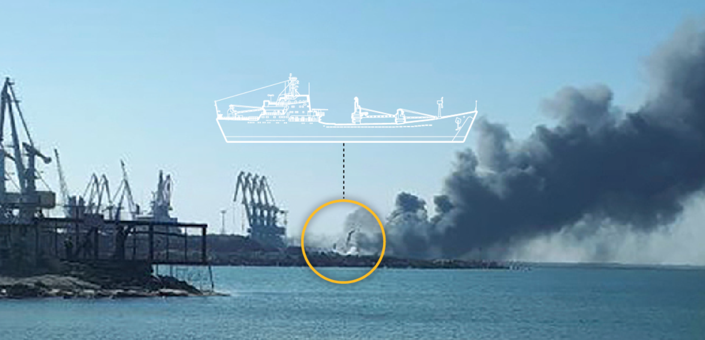
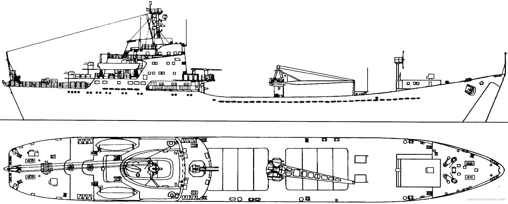
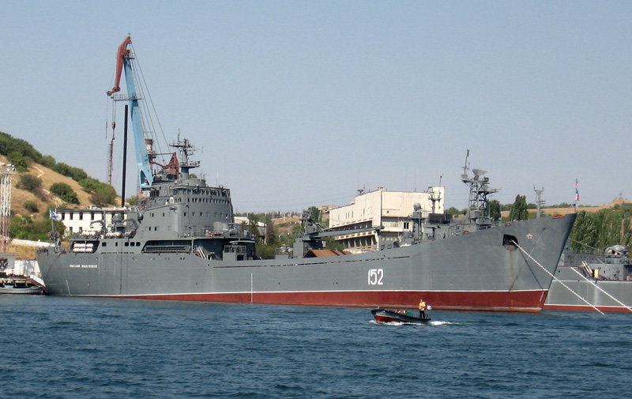
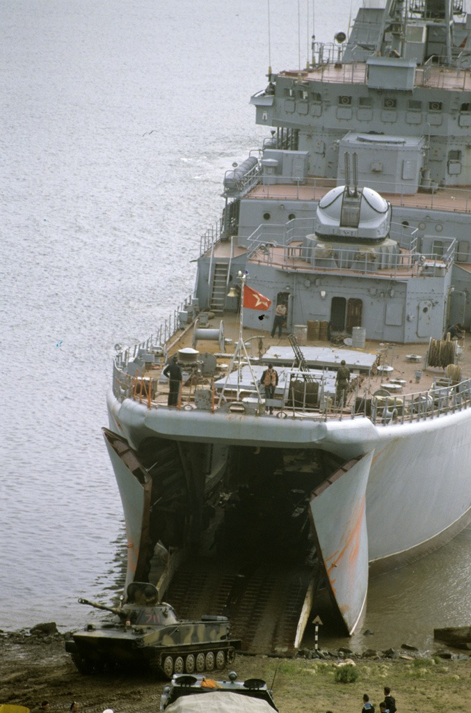
<이번에 격침된 러시아 상륙함은 왜 그리 느린가> 탱크 상륙함은 빠를 필요가 없나? 당연히 빨라야 함! 상륙지점으로의 항해도 빨라야 하고 해안에 돌격할 때 매우 취약하므로 누구보다 빨라야 함! 근데 러시아 상륙함 왜 이리 느린가? 실은 모든 LST가 다 느림. 아래 사진에 보이는 우리 해군 LST인 고준봉함도 1994년 취역했음에도 만재 4300톤, 16노트로서, 저 60년대 말에 진수된 쏘련 Alligator급 상륙함과 스펙이 비슷함.
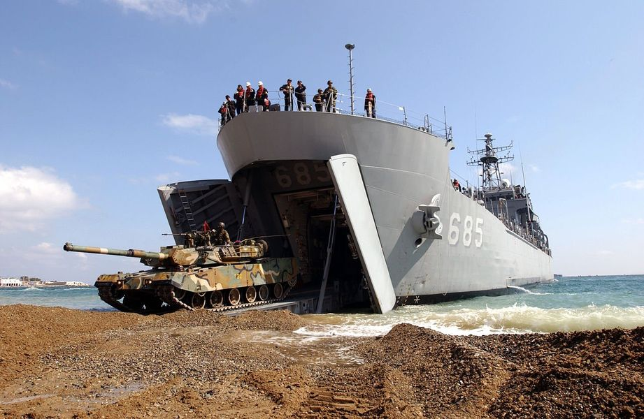
이유는 저 탱크가 기어나올 선수 갑문 때문. 저것 때문에 수면에 닿는 뱃머리의 각도가 뭉툭할 수 밖에 없고 따라서 파도를 헤치고 나가는 것이 힘듬. 미해군도 LST의 속도를 20노트 이상으로 올리는 것이 평생 소원이었으나 저 구조 때문에 어쩔 수 없었던 부분. 그래서 미해군에서는 기존의 LST를 Large Slow Target (크고 느린 타겟)이라고 부른다고 함.
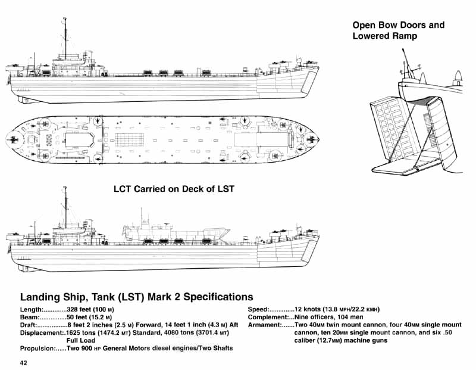
그러나 미해군에 불가능한 것이 어디 있나? 쏘련이 WW2 당시의 구조를 그대로 가진 Alligator급 상륙함을 만들던 60년대 후반, 미해군에서 기발한 아이디어를 냄. 선수 갑문을 그냥 없애면 됨! 대신 카르타고 전쟁에서 로마 갤리선들이 했던 것처럼, 기중기를 이용해서 탱크가 건널 수 있는 경사로를 내서 상갑판에서 그대로 해안으로 내려가면 됨! 그게 바로 아래 사진에 보이는 Newport급 LST. 선수 갑문이 없어진 덕분에 이물을 날렵하게 만들 수 있고 덕분에 만재배수량 8400톤임에도 마의 20노트를 돌파하여 22노트의 속도를 냄.
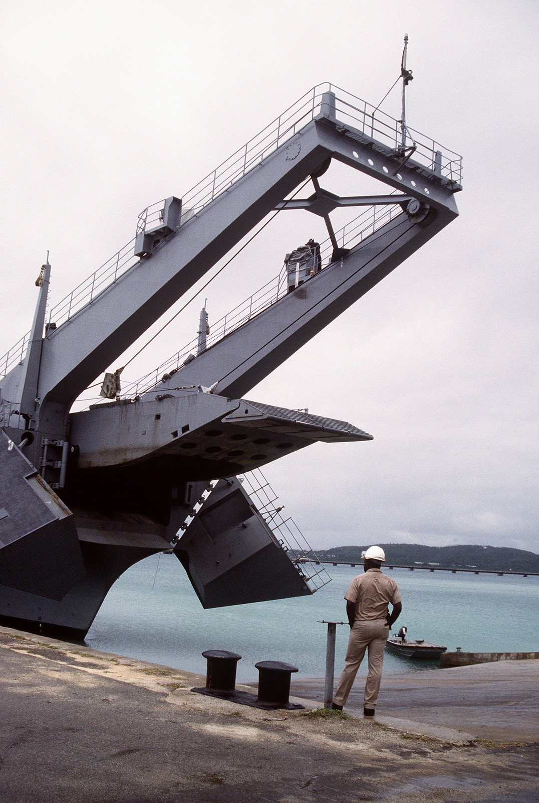 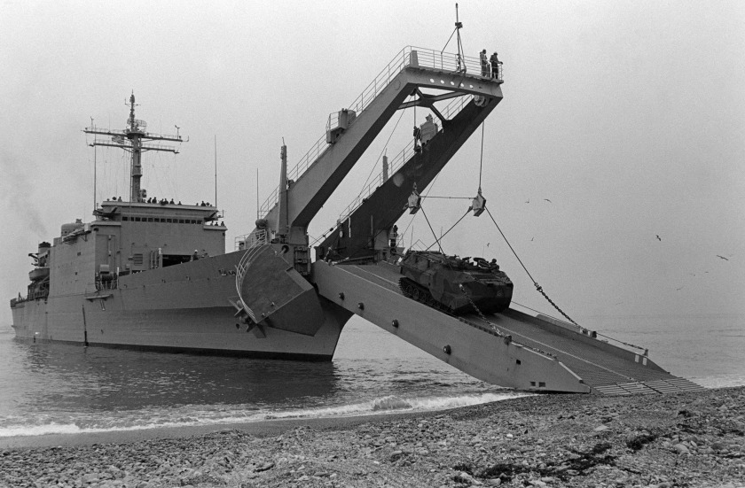 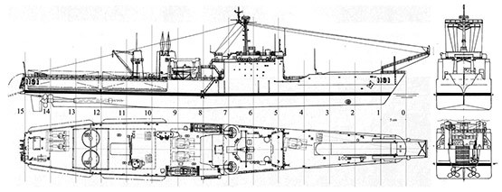
(Bow door가 없어지니 선체 구조가 예전 LST보다 훨씬 유선형이 됨)
이 기발한 아이디어에 기뻐서 공중제비를 돌던 미해군은 총 27대의 Newport급 LST를 주문했으나 20척까지만 만들고 중단. 게다가 빠른 속도로 이 LST들을 퇴역시키거나 다른 나라 해군에 판매 시작. 대체 왜?
<LST의 몰락> 상륙전은 언제나 힘든 작전인데, 이유는 적과의 싸움은 물론 거친 파도 및 험한 해안지형, 그리고 날씨와도 싸워야하기 때문. 그야말로 사람과 바다와 땅, 하늘이 모두 적이 되는 기가 막힌 싸움. 그러나 WW2 노르망디 상륙작전 이래 기술적으로 극적인 변화는 별로 없었음. 1982년 영국군이 포클랜드 산 카를로스 만에 상륙할 때도 Landing Craft Vehicle and Personnel (LCVP)와 Landing Craft Utility (LCU) 각각 4척씩, 총 8척의 소형 상륙정을 이용해서 상륙작전이 일어났음 (아래 당시 사진 참조).
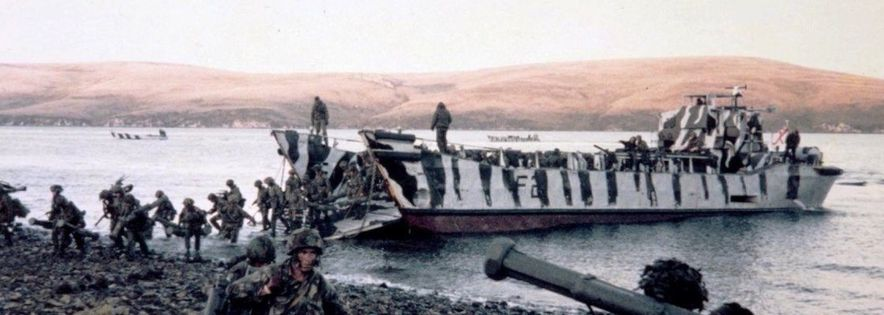
당시 영국함대에는 Round Table급 LSL (Landing Ship Logistics, 아래 사진)이 6척이나 있었고, 이들은 LST처럼 선수의 갑문을 통해 트럭 또는 탱크 등을 직접 해안에 내려놓을 수 있었음. 그러나 그러지 못하고 작은 상륙정 등에게 짐과 사람을 실어서 상륙시켜야 했음. 이유는 지형과 바다의 깊이 등이 3~4천톤급의 상륙선이 직접 해안에 닿는 것에 적절하지 않았기 때문.
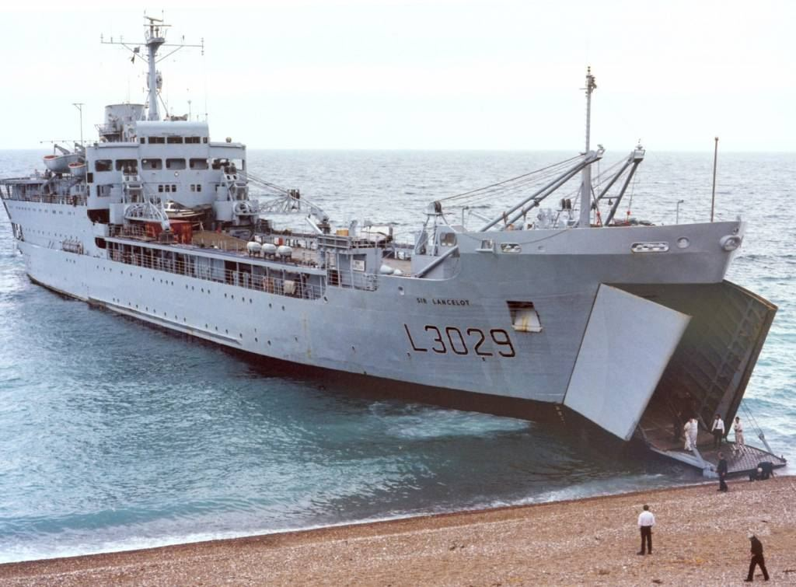
그로 인해 상륙 첫날, 하루종일 상륙한 병력은 3천명, 그리고 1천톤의 장비와 보급품만 내려놓음. 다행히 산 카를로스 해안에는 제대로 된 아르헨티나군 수비군이 없었는데도 그랬고, 하루종일 날아온 아르헨티나 전투기들도 화물선과 상륙지원함들이 아닌 구축함과 프리깃함만 노렸는데도 그 모양이었음. 만약 아르헨티나 전투기들이 취약한 화물선, 상륙지원함들을 노렸다면 이 상륙전은 참극으로 끝났을 것. 이처럼 대형 LST의 한계는 명확. 이건 미해군이 야심적으로 만든 Newport급 LST도 피할 수 없었던 한계. 그런데 이때 미해군은 이 문제를 해결할 회심의 기술적 혁신을 마련. 바로 Landing Craft Air Cushion (LCAC), 즉 공기부양정. <LCAC과 초수평선 상륙작전> 공기부양정인 LCAC은 상륙작전을 획기적으로 바꾸어 놓음. 먼저 해안지형. 상륙전의 가장 큰 적은 사람보다는 파도와 해안지형아고, 덕분에 상륙전을 감행할 수 있는 해변은 사실 그렇게 많지 않음. 그렇게 상륙 지점을 예상할 수 있다보니 수비군에게 크게 유리. 그런데 바다와 땅 위를 공기의 힘으로 떠다니는 LCAC은 그런 제약사항에서 크게 벗어남. 덕분에 전세계 해안의 80%에서 상륙작전이 가능해짐. 이제 어디로 상륙이 가능할지 예측이 사실상 불가능해짐.
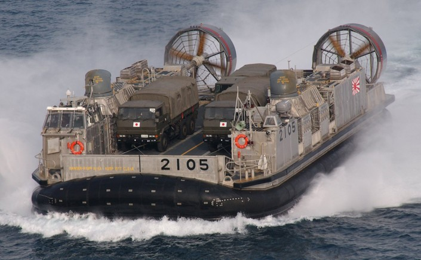
그런데 여전히 수비군은 어디로 적이 상륙할지 예측 가능한 방법이 있음. 이유는 상륙정의 느린 속도 때문. LCU나 LCVP와 같은 소형 상륙정은 이물에 경사로가 달린 생김새 때문에라도 속도가 8노트 정도에 불과. 그러니 상륙지점 바로 코 앞까지 상륙지원함들이 와서 LCU나 LCVP를 내려놓아야 함. WW2 때 노르망디 상륙작전에서도 해안포 사정거리 내인 10km 이내까지 접근해야 했음. 거기서 해안까지 8노트의 속도로 달려봐야 30분 넘게 걸림. 그런데 LCAC은 탱크를 싣고도 40노트를 냄. 시속 74km임. 적 수비대의 관측에서 벗어나는 수평선 너머인 30km 밖에서 출발해도 30분이면 해안에 당도. 그러다보니 적은 상륙함대를 포착하기도 어렵고, 항공기 등을 통해 포착한다고 해도 얘들이 정확하게 어느 해변에 상륙할 것인지 짐작하기가 더욱 어려워짐. 이렇게 LCAC이 등장했음에도 미해군은 처음에는 Newport급 LST 몇 척은 남겨두었음. 이유는 탱크나 트럭 등에 사용할 막대한 양의 연료를 해안으로 실어나를 운송수단이 없었기 떄문. 그런데 의지의 미해군은 tanker용 LCAC을 기어코 만들어냈고 결국 야심차게 만들었던 Newport급 LST를 10년만에 모조리 퇴역시킴. 대신 LCAC을 발진시킬 LSD (Landing Ship Dock), LPD (Landing Platform Dock), LHD (Landing Helicopter Dock)들이 잔뜩 필요해짐. LHD부터는 미해군이 흔히 앰핍(amphib)이라고 부르는 Amphibious assault ship인데, 이는 사실상 경항모 (아래 사진).
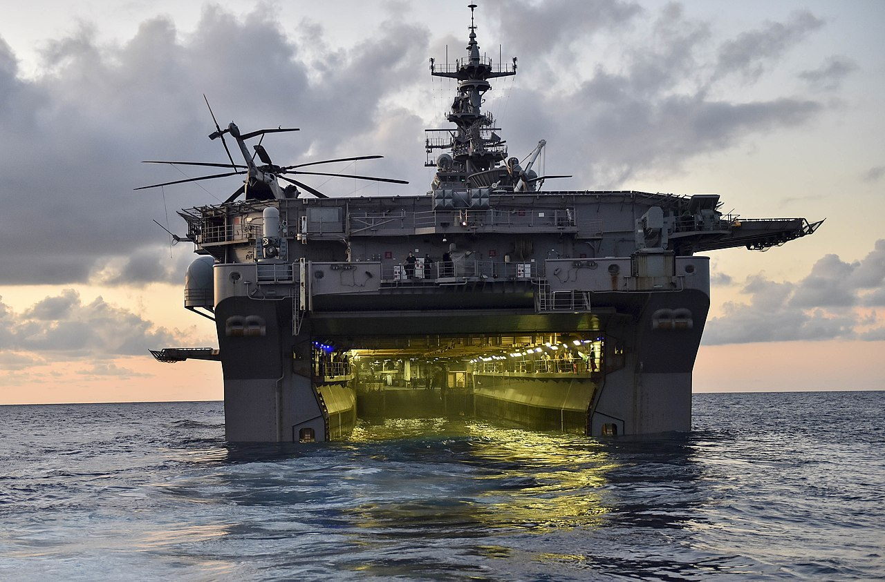 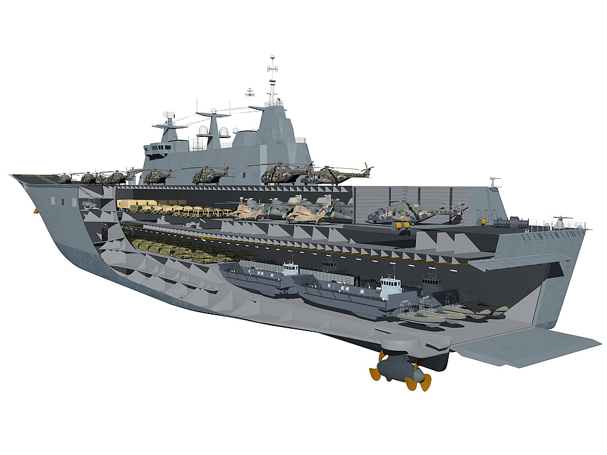
그러나 초수평선 상륙작전은 그 나름대로의 문제점이 있었기 때문에 결국 미해군은 아예 well deck을 없애고 헬기 및 F-35B와 같은 STOVL(Short Take-Off Vertical Landing) 항공기 운용에 중점을 둔 LHA를 만들기 시작. 이는 나중에 미해병대가 아예 탱크를 전량 폐기하는 변화와도 연계됨.
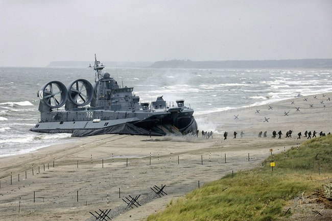